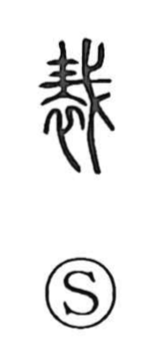

債

Uncategorized
Kun: | On: sai
debt ・ liability ・ obligation ・ claim
Explanation
A phono-semantic graph, 債 is built on 責 as its phonetic core. In early usage 責 (also written 賚) denoted the act of pressing for payment of tribute and tax (賦貢). Accordingly, 債 first referred to the obligation to render such payments. As the concept spread from taxation to the world of lending and borrowing, it came to mean a debt—something one is bound to repay. An anecdote tells of King Nan of Zhou, who, heavily in arrears to his retainers, would flee to a tall tower whenever pressed for repayment; people dubbed it the “tower for evading debt” (逃責の台). Thus 責 is the original character underlying 債.